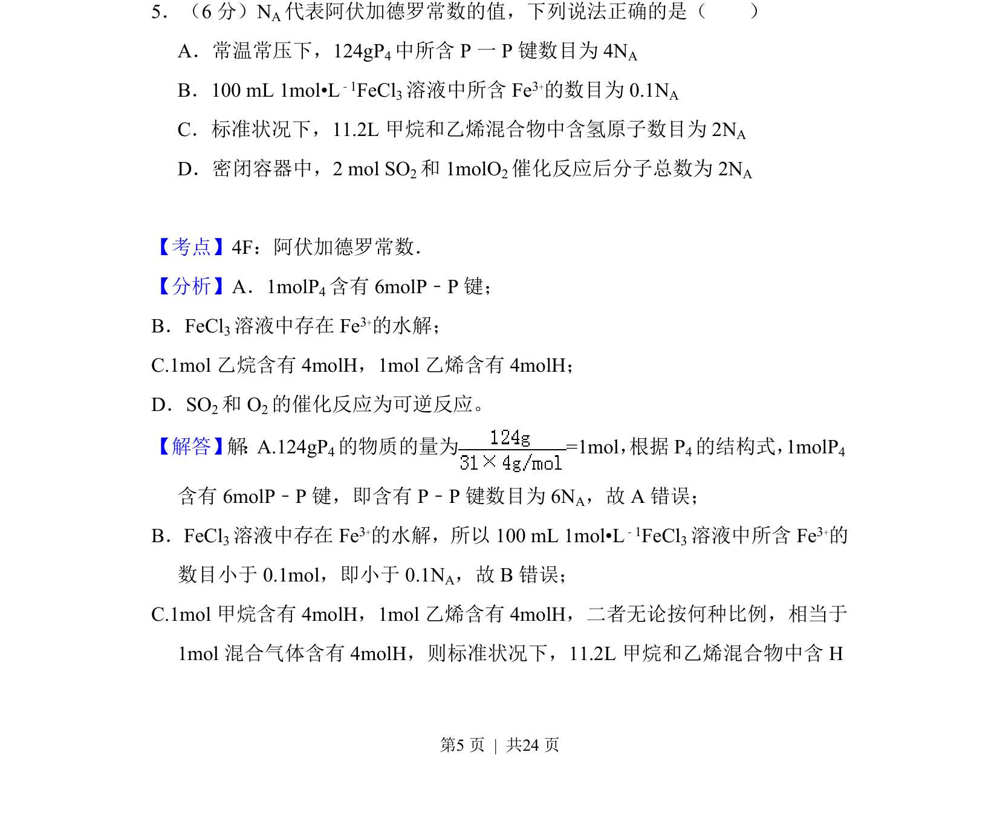
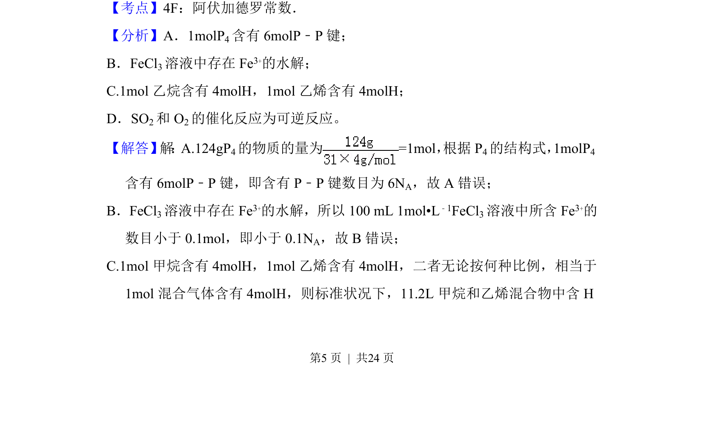
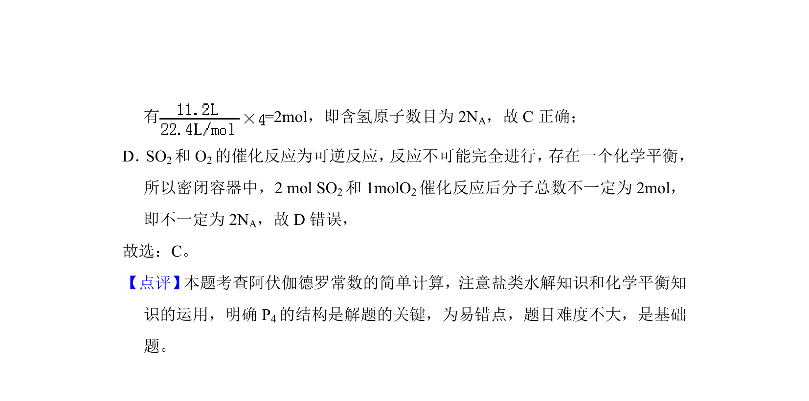

考点：阿伏加德罗常数 物质的量 气体摩尔体积 可逆反应

考查阿伏加德罗常数应用，涵盖物质结构、盐类水解、气体摩尔体积及可逆反应计算。


📄 原 PDF 第 5 页：
素材/真题/吉林/2008-2024·（吉林）化学高考真题/2018年高考化学试卷（新课标Ⅱ）（解析卷）.pdf
5．（6分）N A代表阿伏加德罗常数的值，下列说法正确的是（ ） A．常温常压下，124gP4中所含P一P键数目为4N A B．100 mL 1mol•L﹣1FeCl3溶液中所含Fe 3+的数目为0.1N A C．标准状况下，11.2L甲烷和乙烯混合物中含氢原子数目为2N A D．密闭容器中，2 mol SO2和1molO 2催化反应后分子总数为2N A
【考点】4F：阿伏加德罗常数．菁优网版权所有 【分析】A．1molP4含有6molP﹣P键； B．FeCl3溶液中存在Fe 3+的水解； C.1mol乙烷含有4molH，1mol乙烯含有4molH； D．SO2和O 2的催化反应为可逆反应。 【解答】 解 ：A.124gP4的物质的量为=1mol， 根据P 4的结构式，1molP4 含有6molP﹣P键，即含有P﹣P键数目为6N A，故A错误； B．FeCl3溶液中存在Fe 3+的水解，所以100 mL 1mol•L ﹣1FeCl3溶液中所含Fe 3+的 数目小于0.1mol，即小于0.1N A，故B错误； C.1mol甲烷含有4molH，1mol乙烯含有4molH，二者无论按何种比例，相当于 1mol混合气体含有4molH，则标准状况下，11.2L甲烷和乙烯混合物中含H